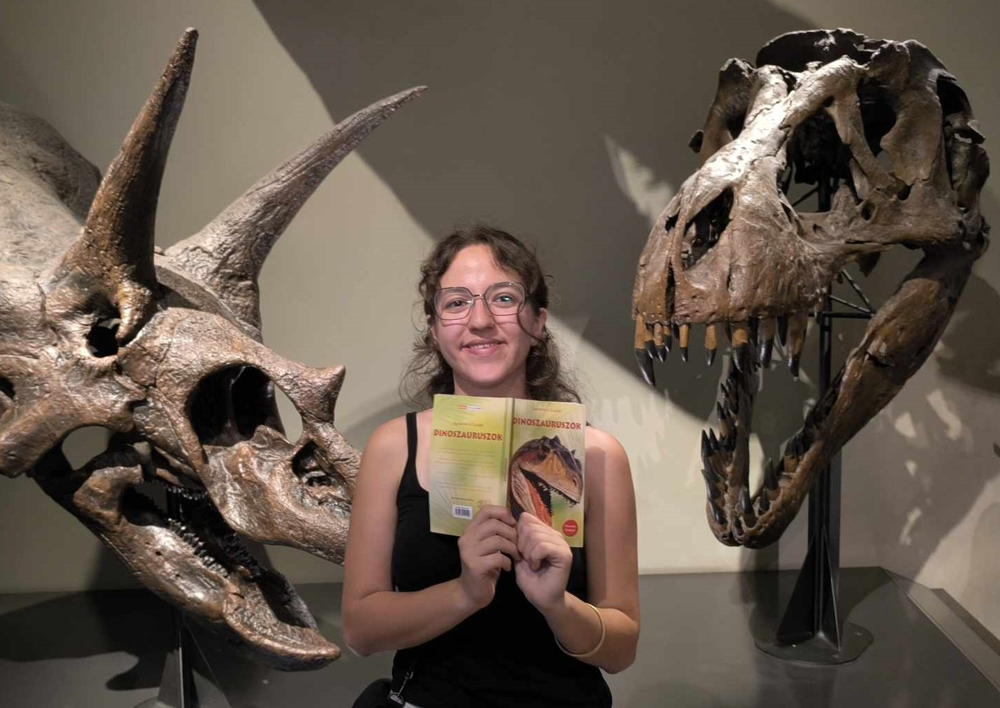
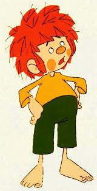
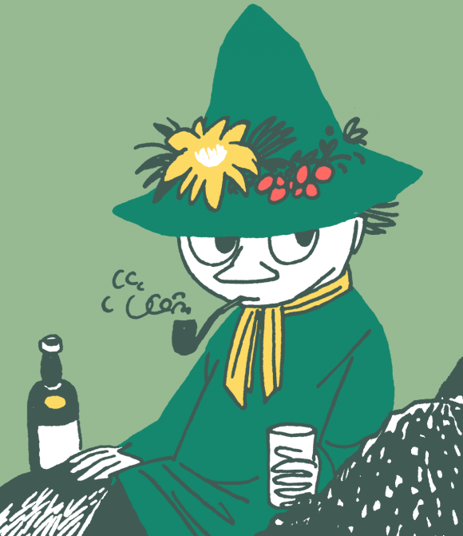
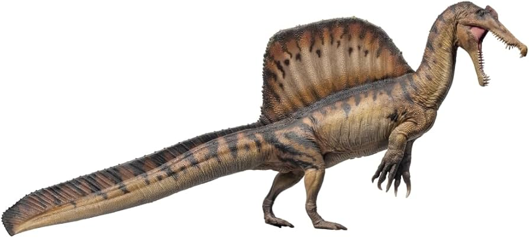
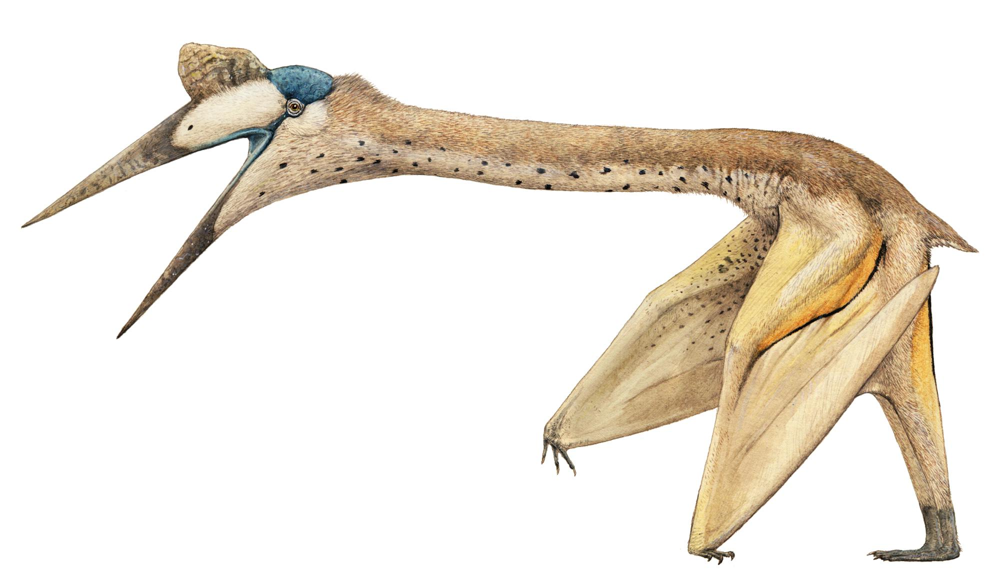

Nagyon menő vagyok, és szeretem a dínókat.



A Spinosaurus (nevének jelentése „tüskésgyík” vagy „hátgerinces gyík”) a theropoda dinoszauruszok egyik faja. Feltételezhető, hogy halevő volt, és vízi életmódot folytatott.
A megtévesztő cím ellenére a Quetzalcoatlus nem egy dínó, bár közeli rokonságban állnak. A több mint 10 méteres szárnyfesztávolságával, a valaha élt legnagyobb röpképes állat.
A Triceratops (jelentése 'háromszarvú arc') az egyik legismertebb dinoszaurusz. A késő kréta korban élt, a hírhedt T-Rex ádáz ellensége volt.